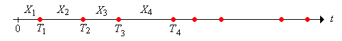
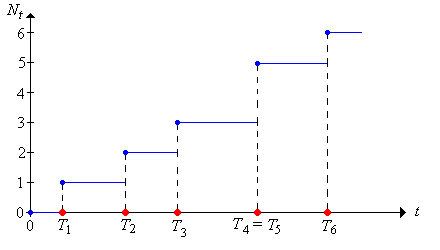
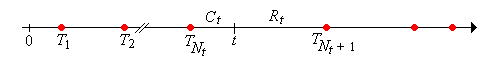
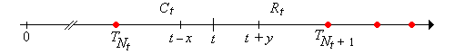

A renewal process is an idealized stochastic model for events
that occur randomly in time. These temporal events are generically referred to as renewals or arrivals. Here are some typical interpretations and applications.
Examples
customersarriving at a
service station. Again, the terms are generic. A customer might be a person and the service station a store, but also a customer might be a file request and the service station a web server.
The basic model actually gives rise to several interrelated random processes: the sequence of interarrival times, the sequence of arrival times, and the counting process. The term renewal process can refer to any (or all) of these. There are also several natural age
processes that arise. In this section we will define and study the basic properties of each of these processes in turn.
Let \(X_1\) denote the time of the first arrival, and \(X_i\) the time between the \((i - 1)\)st and \(i\)th arrivals for \(i \in \{2, 3, \ldots)\). The basic assumption is that the sequence of interarrival times \(\bs{X} = (X_1, X_2, \ldots)\) is a sequence of independent copies of a random variable \(X\) with values in \([0, \infty)\) and with \(\P(X \gt 0) \gt 0\).
So the interarrival times are nonnegative, but not identically 0. In statistical terms, \(\bs X\) corresponds to sampling from the distribution of \(X\).
Let \(\mu = \E(X)\) denote the common mean of the interarrival times. Then \(\mu \gt 0\).
This is a basic fact from properties of expected value. For a simple proof, note that if \(\mu = 0\) then \(\P(X \gt x) = 0\) for every \(x \gt 0\) by Markov's inequality. But then \(\P(X = 0) = 1\). .
It is possible that \(\mu = \infty\). If \(\mu \lt \infty\), we will let \(\sigma^2 = \var(X)\) denote the common variance of the interarrival times.
Let \(F\) denote the common distribution function of the interarrival times, so that \[ F(x) = \P(X \le x), \quad x \in [0, \infty) \]
The distribution function \(F\) turns out to be of fundamental importance in the study of renewal processes. We will let \(f\) denote the probability density function of the interarrival times if the distribution is discrete or if the distribution is continuous and has a probability density function (that is, if the distribution is absolutely continuous with respect to Lebesgue measure on \( [0, \infty) \)). In the discrete case, the following definition turns out to be important:
If \( X \) takes values in the set \( \{n d: n \in \N\} \) for some \( d \in (0, \infty) \), then \( X \) (or its distribution) is said to be arithmetic (the terms lattice and periodic are also used). The largest such \( d \) is the span of \( X \).
The reason the definition is important is because the limiting behavior of renewal processes turns out to be more complicated when the interarrival distribution is arithmetic.
Let \(T_0 = 0\) and let \(T_n\) denote the time of the \(n\)th arrival for \(n \in \N_+\). The sequence \(\bs{T} = (T_0, T_1, \ldots)\) is the arrival time process and is the partial sum proccess associated with the sequence of interarrival times: \[ T_n = \sum_{i = 1}^n X_i, \quad n \in \N \]
We follow our usual convention that the sum over an empty index set is 0 so the representation as a sum is correct when \(n = 0\). Note that \(T_0\) is not considered an arrival.
So the arrival times can be obtained from the interarrival times, and conversely, the interarrival times can be reovered from the arrival times: \[ X_i = T_i - T_{i-1}, \quad i \in \N_+ \] A renewal process is so named because the process starts over, independently of the past, at each arrival time.

For \(n \in \N\), let \(F_n\) denote the distribution function of \(T_n\), so that \[ F_n(t) = \P(T_n \le t), \quad t \in [0, \infty) \]
So \(F_1 = F\), the distribution function of the generic interarrival time \(X\). Recall that if \(X\) has probability density function \(f\) (in either the discrete or continuous case), then \(T_n\) has probability density function \(f_n = f^{*n} = f * f * \cdots * f\), the \(n\)-fold convolution power of \(f\).
The sequence of arrival times \(\bs{T}\) has stationary, independent increments:
Recall that these are properties that hold generally for the partial sum sequence associated with a sequence of IID variables.
Suppose that \(\mu \lt \infty\) and \(\sigma^2 \lt \infty\). Then
Part (a) follows, of course, from the additive property of expected value, and part (b) from the additive property of variance for sums of independent variables. For part (c), assume that \(m \le n\). Then \(T_n = T_m + (T_n - T_m)\). But \(T_m\) and \(T_n - T_m\) are independent, so \[ \cov\left(T_m, T_n\right) = \cov\left[T_m, T_m + (T_n - T_m)\right] = \cov(T_m, T_m) + \cov(T_m, T_n - T_m) = \var(T_m) = m \sigma^2 \]
If \(\mu \lt \infty\) then \(T_n / n \to \mu\) as \(n \to \infty\)
Note that \(T_n \le T_{n + 1}\) for \(n \in \N\) since the interarrival times are nonnegative. Also \(\P(T_n = T_{n-1}) = \P(X_n = 0) = F(0)\). This can be positive, so with positive probability, more than one arrival can occur at the same time. On the other hand, the arrival times are unbounded:
\(T_n \to \infty\) as \(n \to \infty\) with probability 1.
Since \(\P(X \gt 0) \gt 0\), there exits \(t \gt 0\) such that \(\P(X \gt t) \gt 0\). From the second Borel-Cantelli lemma it follows that with probability 1, \(X_i \gt t\) for infinitely many \(n \in \N_+\). Therefore \(\sum_{i=1}^\infty X_i = \infty\) with probability 1.
For \(t \ge 0\), let \(N_t\) denote the number of arrivals in the interval \([0, t]\): \[ N_t = \sum_{n=1}^\infty \bs{1}(T_n \le t), \quad t \in [0, \infty) \] The random process \(\bs{N} = (N_t: t \ge 0)\) is the counting process.
Recall again that \( T_0 = 0 \) is not considered an arrival, but it's possible to have \( T_n = 0 \) for \( n \in \N_+ \), so there may be one or more arrivals at time 0.
\(N_t = \max\{n \in \N: T_n \le t\}\) for \(t \ge 0\).
If \(s, \, t \in [0, \infty)\) and \(s \le t\) then \(N_t - N_s\) is the number of arrivals in \((s, t]\).
Note that as a function of \(t\), \(N_t\) is a (random) step function with jumps at the distinct values of \((T_1, T_2, \ldots)\); the size of the jump at an arrival time is the number of arrivals at that time. In particular, \(N\) is an increasing function of \(t\).

More generally, we can define the (random) counting measure corresponding to the sequence of random points \((T_1, T_2, \ldots)\) in \([0, \infty)\).
For measurable \(A \subseteq [0, \infty)\), let \(N(A)\) denote the number of the random points in \(A\): \[ N(A) = \sum_{n=1}^\infty \bs{1}(T_n \in A) \]
In particular, note that with our new notation, \(N_t = N[0, t]\) for \(t \ge 0\) and \(N(s, t] = N_t - N_s\) for \(s \le t\). So the random counting measure is completely determined by the counting process. The counting process is the cumulative measure function
for the counting measure, analogous the cumulative distribution function of a probability measure.
For \(t \ge 0\) and \(n \in \N\),
Note that the event in part (a) means that at there are at least \(n\) arrivals in \([0, t]\). The event in part (b) means that there are exactly \(n\) arrivals in \([0, t]\).
Of course, the complements of the events in (a) are also equivalent, so \( T_n \gt t \) if and only if \( N_t \lt n \). On the other hand, neither of the events \( N_t \le n \) and \( T_n \ge t \) implies the other. For example, we couse easily have \( N_t = n \) and \( T_n \lt t \lt T_{n + 1} \). Taking complements, neither of the events \( N_t \gt n \) and \( T_n \lt t \) implies the other. Exercise also shows that the arrival time process \( \bs{T} \) and the counting process \( \bs{N} \) are inverses of each other in a sense.
The following events have probability 1:
Exercise can also be used to obtain the probability distribution of the counting variables in terms of the interarrival distribution function \(F\).
For \(t \ge 0\) and \(n \in \N\),
The next result is little more than a restatement of . However, you may need to review the section on filtrations and stopping times to understand the result
For \( t \in [0, \infty) \), \( N_t + 1 \) is a stopping time for the sequence of interarrival times \( \bs{X} \)
Note that \( N_t + 1 \) takes values in \( \N_+ \), so we need to show that the event \( \left\{N_t + 1 = n\right\} \) is measurable with respect to \( \mathscr{F}_n = \sigma\{X_1, X_2, \ldots, X_n\} \) for \( n \in \N_+ \). But from , \( N_t + 1 = n \) if and only if \( N_t = n - 1 \) if and only if \( T_{n-1} \le t \lt T_n \). The last event is clearly measurable with respect to \( \mathscr{F}_n \).
The function \( M \) that gives the expected number of arrivals up to time \(t\) is the renewal function: \[ M(t) = \E(N_t), \quad t \in [0, \infty) \]
The renewal function turns out to be of fundamental importance in the study of renewal processes. Indeed, the renewal function essentially characterizes the renewal process. It will take awhile to fully understand this, but the following exercise is a first step:
The renewal function is given in terms of the interarrival distribution function by \[ M(t) = \sum_{n=1}^\infty F_n(t), \quad 0 \le t \lt \infty \]
Recall that \(N_t = \sum_{n=1}^\infty \bs{1}(T_n \le t)\). Taking expected values gives the result. Note that the interchange of sum and expected value is valid because the terms are nonnegative.
Note that we have not yet shown that \(M(t) \lt \infty\) for \(t \ge 0\), and note also that this does not follow from . However, we will establish this finiteness condition in below. If \( M \) is differentiable, the derivative \( m = M^\prime \) is known as the renewal density, so that \( m(t) \) gives the expected rate of arrivals per unit time at \( t \in [0, \infty) \). The renewal function defines a measure:
For measurable \(A \subseteq [0, \infty)\), let \(M(A) = \E[N(A)]\), the expected number of arrivals in \(A\). Then \(M\) is a positive measure on \([0, \infty)\), known as the renewal measure.
\(N\) is a measure on \([0, \infty)\) (albeit a random one). So if \((A_1, A_2, \ldots)\) is a sequence of disjoint, measurable subsets of \([0, \infty)\) then \[ N\left(\bigcup_{i=1}^\infty A_i \right) = \sum_{i=1}^\infty N(A_i) \] Taking expected values gives \[ m\left(\bigcup_{i=1}^\infty A_i \right) = \sum_{i=1}^\infty m(A_i) \] Again, the interchange of sum and expected value is justified since the terms are nonnegative.
The renewal measure can be expressed in terms of the arrival times:
For measurable \(A \subseteq [0, \infty)\), \[ M(A) = \sum_{n=1}^\infty \P(T_n \in A) \]
Recall that \(N(A) = \sum_{n = 1}^\infty \bs{1}(T_n \in A)\). Taking expected values gives the result. Again, the interchange of expected value and infinite series is justified since the terms are nonnegative.
The renewal function actually determines the entire renewal measure.
If \( s\, \, t \in [0, \infty) \) with \(s \le t\) then \(M(t) - M(s) = M(s, t]\), the expected number of arrivals in \((s, t]\).
The renewal function is the cumulative measure function
, analogous to the cumulative distribution function of a probability measure. So every renewal process naturally leads to two measures on \([0, \infty)\), the random counting measure corresponding to the arrival times, and the measure associated with the expected number of arrivals.
For \(t \in [0, \infty)\), \(T_{N_t} \le t \lt T_{N_t + 1}\). That is, \(t\) is in the random renewal interval \([T_{N_t}, T_{N_t + 1})\).
Consider the reliability example in , so that whenever a device fails, it is immediately replaced by a new device of the same type. Then the sequence of interarrival times \(\bs{X}\) is the sequence of lifetimes, while \(T_n\) is the time that the \(n\)th device is placed in service. There are several other natural random processes that can be defined.
The random variable \[ C_t = t - T_{N_t}, \quad t \in [0, \infty) \] is the current life at time \(t\), and the random process \(\bs{C} = (C_t: t \ge 0)\) is the current life process.
Random variable \(C_t\) takes values in the interval \([0, t]\), and in the reliability setting, is the age of the device that is in service at time \(t\).
The random variable \[ R_t = T_{N_t + 1} - t, \quad t \in [0, \infty) \] is the remaining life at time \(t\), and the random process \(\bs{R} = (R_t: t \ge 0)\) is the remaining life process.
Random variable \(R_t\) takes values in the interval \((0, \infty)\), and in the reliability setting, is the time remaining until the device that is in service at time \(t\) fails.

The random variable \[ L_t = C_t + R_t = T_{N_t+1} - T_{N_t} = X_{N_t + 1}, \quad t \in [0, \infty) \] is the total life at time \(t\), and the random process \(\bs{L} = (L_t: t \ge 0)\) is the total life process.
Random variable \(L_t\) takes values in \([0, \infty)\), and in the reliability setting, gives the total life of the device that is in service at time \(t\). Tail events of the current and remaining life can be written in terms of each other and in terms of the counting variables.
Suppose that \(t \in [0, \infty)\), \(x \in [0, t]\), and \(y \in [0, \infty)\). Then
The events in part (a) mean that there is no arrival in the interval \((t, t + y]\). The events in part (b) mean that there is no arrival in the interval \((t - x, t]\). Finally, the events in part (c) mean that there is no arrival in the interval \((t - x, t + x]\).

Of course, the various equivalent events in must have the same probability. In particular, it follows that if we know the distribution of \(R_t\) for all \(t\) then we also know the distribution of \(C_t\) for all \(t\), and in fact we know the joint distribution of \( (R_t, C_t) \) for all \(t\) and hence also the distribution of \(L_t\) for all \(t\).
For fixed \( t \in (0, \infty) \) the total life at \( t \) (the lifetime of the device in service at time \( t \)) is stochastically larger than a generic lifetime. This result, a bit surprising at first, is known as the inspection paradox. Let \( X \) denote fixed interarrival time.
\( \P(L_t \gt x) \ge \P(X \gt x) \) for \( x \ge 0 \).
Recall that \( L_t = X_{N_t + 1} \). The proof is by conditioning on \( N_t \). An important tool is the fact that if \( A \) and \( B \) are nested events in a probability space (one a subset of the other), then the events are positively correlated, so that \( \P(A \mid B) \ge \P(A) \). Recall that \( F \) is the common CDF of the interarrival times. First \[ \P\left(X_{N_t + 1} \gt x \mid N_t = 0\right) = \P(X_1 \gt x \mid X_1 \gt t) \ge \P(X_1 \gt x) = 1 - F(x) \] Next, for \( n \in \N_+ \), \[ \P\left(X_{N_t + 1} \gt x \mid N_t = n\right) = \P\left(X_{n + 1} \gt x \mid T_n \le t \lt T_{n + 1}\right) = \P(X_{n+1} \gt x \mid T_n \le t \lt T_n + X_{n+1}) \] We condition this additionally on \( T_n \), the time of the \( n \)th arrival. For \( s \le t \), and since \( X_{n+1} \) is independent of \( T_n \), we have \[ \P(X_{n+1} \gt x \mid T_n = s, \, X_{n+1} \gt t - s) = \P(X_{n+1} \gt x \mid X_{n + 1} \gt t - s) \ge \P(X_{n + 1} \gt x) = 1 - F(x) \] It follows that \( \P\left(X_{N_t + 1} \gt x \mid N_t = n\right) \ge 1 - F(x) \) for every \( n \in \N \), and hence \[ \P\left(X_{N_t + 1} \gt x\right) = \sum_{n=0}^\infty \P\left(X_{N_t + 1} \gt x \mid N_t = n\right) \P(N_t = n) \ge \sum_{n=0}^\infty \left[1 - F(x)\right] \P(N_n = n) = 1 - F(x) \]
The basic comparison in is often useful, particularly for obtaining various bounds. The idea is very simple: if the interarrival times are shortened, the arrivals occur more frequently.
Suppose now that we have two interarrival sequences, \(\bs{X} = (X_1, X_2, \ldots)\) and \(\bs{Y} = (Y_1, Y_2, \ldots)\) defined on the same probability space, with \(Y_i \le X_i\) (with probability 1) for each \(i\). Then for \(n \in \N\) and \(t \in [0, \infty)\),
Suppose that \( \bs{X} = (X_1, X_2, \ldots) \) is a sequence of Bernoulli Trials with success parameter \(p \in (0, 1)\). Recall that \(\bs{X}\) is a sequence of independent, identically distributed indicator variables with \(\P(X = 1) = p\).
Recall the random processes derived from \(\bs{X}\):
It is natural to view the successes as arrivals in a discrete-time renewal process.
Consider the renewal process with interarrival sequence \(\bs{U}\). Then
So from , the renewal measure is proportional to counting measure on \(\N_+\).
Run the binomial timeline experiment 1000 times for various values of the parameters \(n\) and \(p\). Compare the empirical distribution of the counting variable to the true distribution.
Run the negative binomial experiment 1000 times for various values of the parameters \(k\) and \(p\). Compare the empirical distribution of the arrival time to the true distribution.
Consider again the renewal process with interarrival sequence \(\bs{U}\). For \(n \in \N\),
This renewal process starts over, independently of the past, not only at the arrival times, but at fixed times \(n \in \N\) as well. The Bernoulli trials process (with the successes as arrivals) is the only discrete-time renewal process with this property, which is a consequence of the memoryless property of the geometric interarrival distribution.
We can also use the indicator variables as the interarrival times. This may seem strange at first, but actually turns out to be useful.
Consider the renewal process with interarrival sequence \(\bs{X}\).
The age processes are not very interesting for this renewal process.
For \(n \in \N\) (with probability 1),
As an application renewal process in , we can show that the moment generating function of the counting variable \(N_t\) in an arbitrary renewal process is finite in an interval about 0 for every \(t \in [0, \infty)\). This implies that \(N_t\) has finite moments of all orders and in particular that \(M(t) \lt \infty\) for every \(t \in [0, \infty)\).
Suppose that \(\bs{X} = (X_1, X_2, \ldots)\) is the interarrival sequence for a renewal process. By the basic assumptions, there exists \(a \gt 0\) such that \(p = \P(X \ge a) \gt 0\). We now consider the renewal process with interarrival sequence \(\bs{X}_a = (X_{a,1}, X_{a,2}, \ldots)\), where \(X_{a,i} = a\,\bs{1}(X_i \ge a)\) for \(i \in \N_+\). The renewal process with interarrival sequence \(\bs{X}_a\) is just like the renewal process with Bernoulli interarrivals in , except that the arrival times occur at the points in the sequence \((0, a, 2 a, \ldots)\), instead of \( (0, 1, 2, \ldots) \).
For each \(t \in [0, \infty)\), \(N_t\) has finite moment generating function in an interval about 0, and hence \( N_t \) has moments of all orders at 0.
Note first that \(X_{a,i} \le X_i\) for each \(i \in \N_+\). Recall the moment generating function \(\Gamma\) of the geometric distribution with parameter \(p\) is \[ \Gamma(s) = \frac{e^s p}{1 - (1 - p) e^s}, \quad s \lt -\ln(1 - p) \] But as in , \(N_{a,t}\) can be written as \(a (V_{n + 1} - 1)\) where \(n = \lfloor a / t \rfloor\) and where \(V_{n + 1}\) is a sum of \(n + 1\) IID geometric variables, each with parameter \(p\). We don't really care about the explicit form of the MGF of \(N_{a, t}\), but it is clearly finite in an interval of the from \((-\infty, \epsilon)\) where \(\epsilon \gt 0\). But \(N_t \le N_{t,a}\), so its MGF is also finite on this interval.
The Poisson process, named after Simeon Poisson, is the most important of all renewal processes. Here are the essential properties of this process:
Properties of the Poisson process with rate \( r \in (0, \infty) \).
Note that the renewal measure is a multiple of the standard measure (Lebesgue measure) on \([0, \infty)\).
Consider again the Poisson process with rate parameter \(r\). For \(t \in [0, \infty)\),
The Poisson process starts over, independently of the past, not only at the arrival times, but at fixed times \(t \in [0, \infty)\) as well. The Poisson process is the only renewal process with this property, which is a consequence of the memoryless property of the exponential interarrival distribution.
Run the Poisson experiment 1000 times for various values of the parameters \(t\) and \(r\). Compare the empirical distribution of the counting variable to the true distribution.
Run the gamma experiment 1000 times for various values of the parameters \(n\) and \(r\). Compare the empirical distribution of the arrival time to the true distribution.
Open the renewal experiment and set \( t = 10 \). For each of the following interarrival distributions, run the simulation 1000 times and note the shape and location of the empirical distribution of the counting variable. Note also the mean of the interarrival distribution in each case.